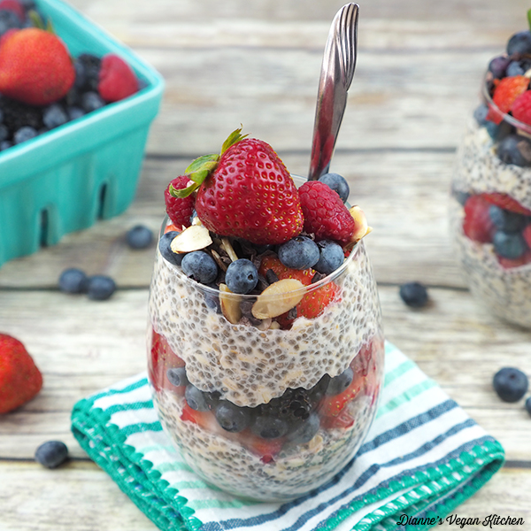

Overnight Oats
The easiest, trendiest, fastest, and arguably most delicious breakfast.
Servings 1
Ingredients
- 1 c. rolled oats
- 1 c. milk
- 0.5 c. Greek yogurt
- 0.125 c. chia seeds
- Toppings of choice
- Optional: Instant coffee
Instructions
- Use equal parts milk and rolled oats.
- Put in half as much Greek yogurt, or to taste.
- Add in however much chia seeds and topping as you'd like.
- I usually put mix in one packet of instant coffee to keep me awake in the morning.